Изображения глаз, поврежденных с помощью LASIK
Рецензия на книгу: LASIK, Цветной атлас и краткий хирургический обзор
ПРЕДУПРЕЖДЕНИЕ: Добросовестное использование этих тревожных изображений регулируется статьей 17 U.S.C. 107. Издатель разрешает воспроизведение этих изображений в рамках рецензии на книгу.
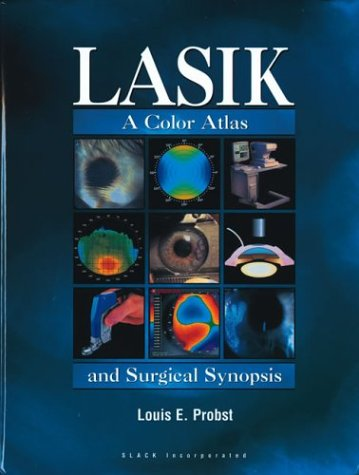
Рецензия пациента на книгу LASIK, цветной атлас и краткий хирургический обзор, Луиса Э. Пробста, Slack Incorporated (7 июня 2001 г.). Эта книга - отличное пособие для тех, кто задумывается о плановой офтальмохирургии. Картинка стоит тысячи слов, и это фотографии глаз таких же пациентов, как и вы, которым надоело носить очки или контактные линзы. Ни один из этих пациентов, отправляясь на операцию, не ожидал, что через 15 минут они выйдут из лазерного кабинета с серьезными повреждениями, которые вы видите ниже. Я думаю, что эту книгу следует раздавать каждому будущему пациенту с LASIK в качестве важной части процесса получения информированного согласия. Поскольку это отпугнет пациентов, вы, вероятно, никогда не увидите эту книгу до операции. Если вы окажетесь таким же, как я, после операции LASIK, вы, возможно, купите ее, просто чтобы понять, что случилось с вашими глазами.
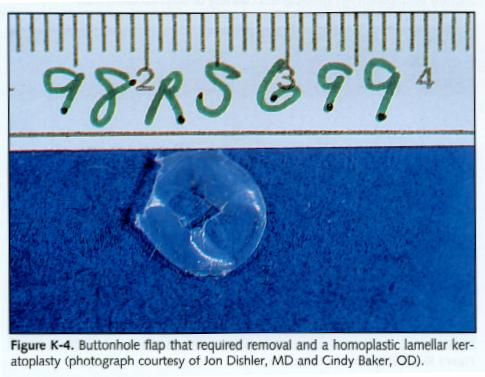
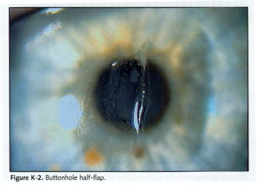
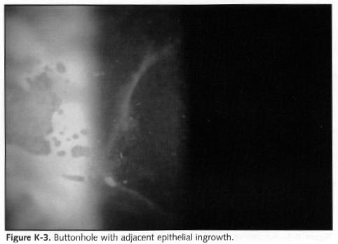
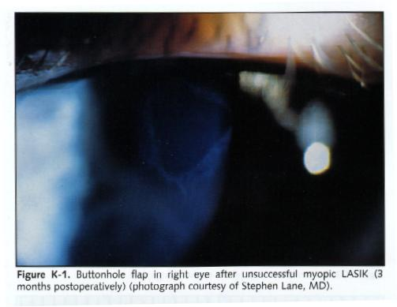
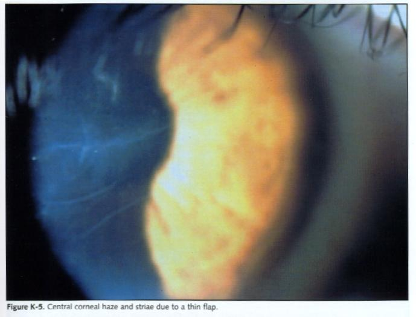
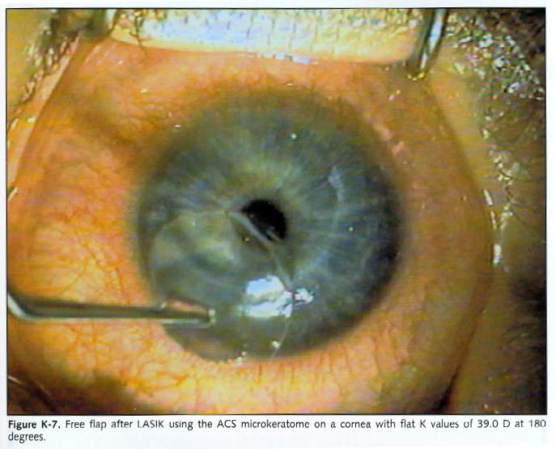
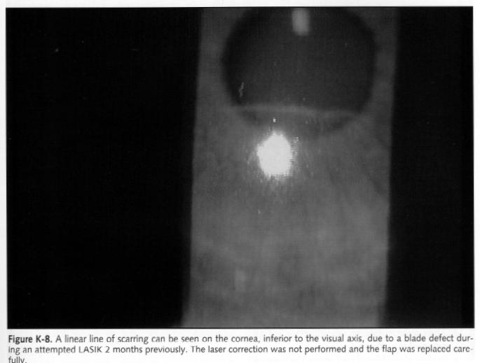
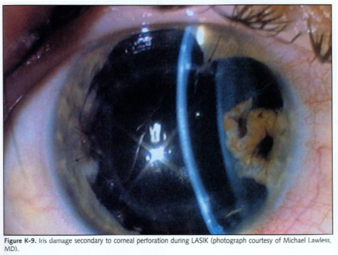
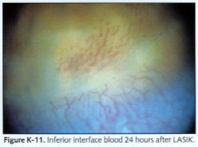
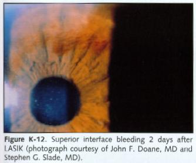
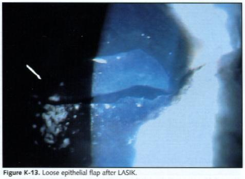
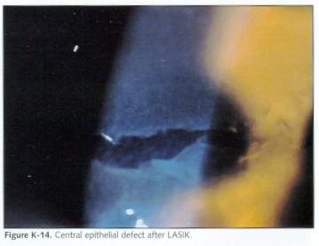
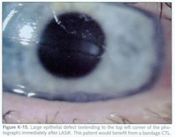
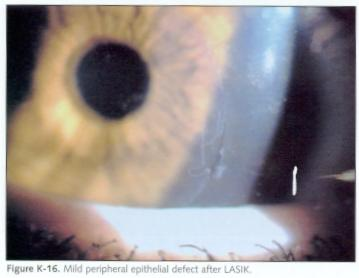
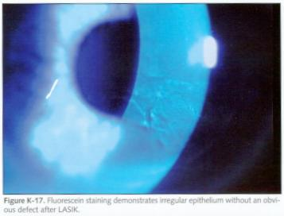
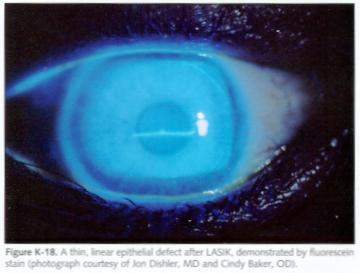
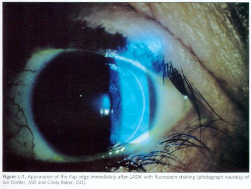
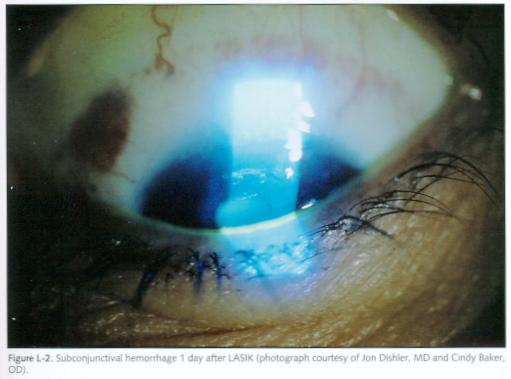
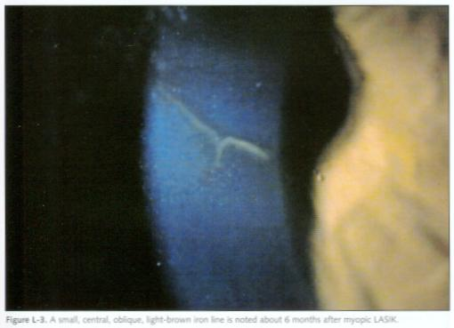
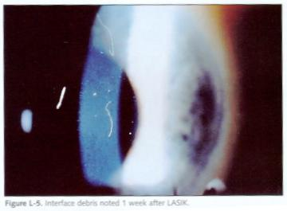
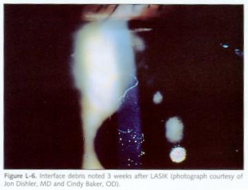
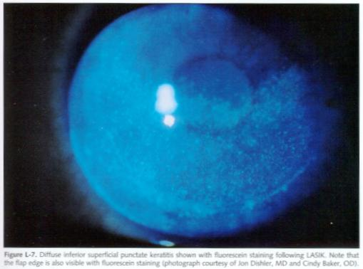
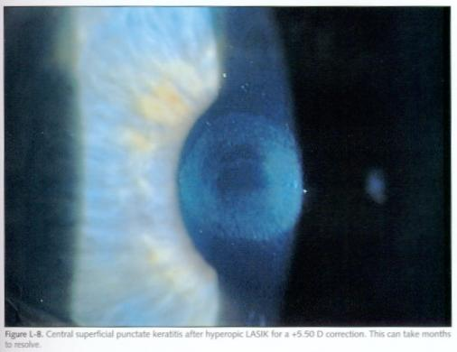
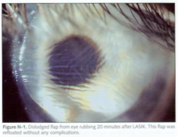
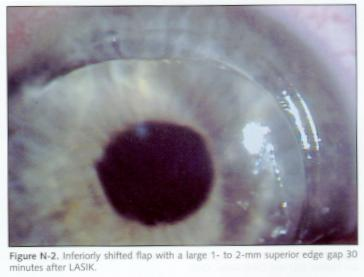
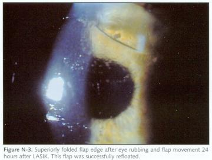
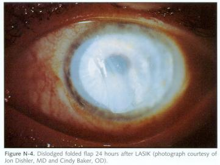
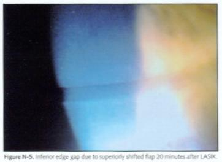
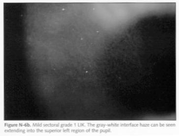
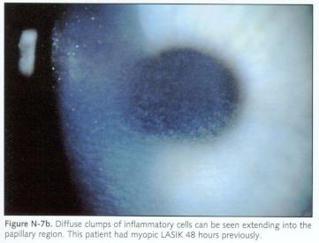
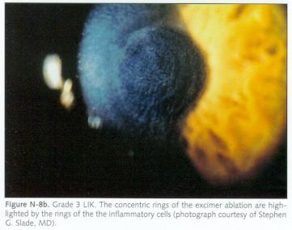
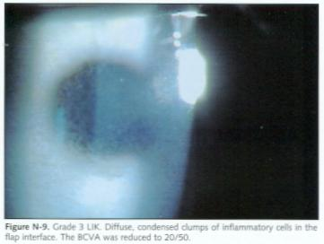
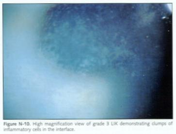
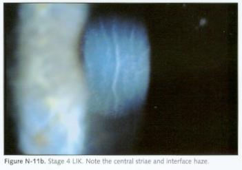
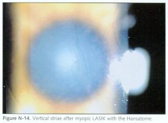
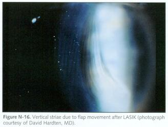
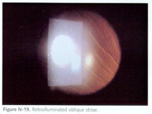
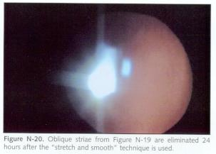

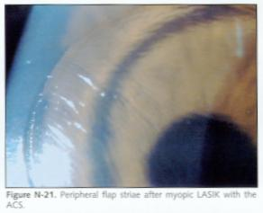
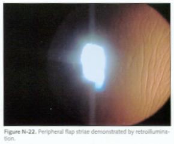
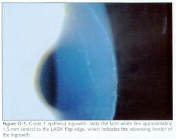
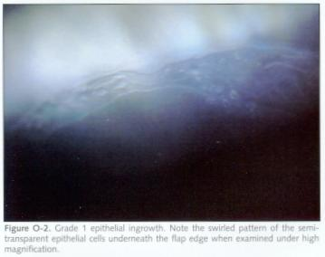
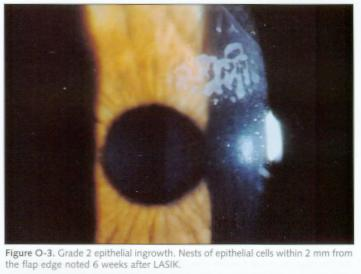
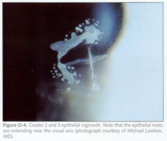
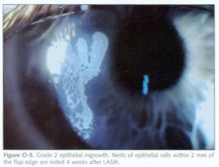
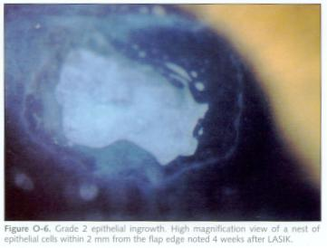
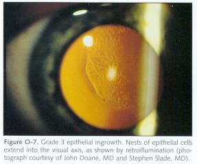
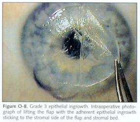